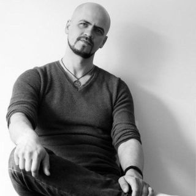

rsschool-2019Q1-cv
Михаил Шемчук

Контакты:
- Тел.: +375 29 714-54-74 (Vel)
- e-mail: mihey.by@gmail.com
- skype: mihey.by
Summary
Желание - учиться и - развиваться, творить - и не натворить! Цель: влиться в компанию молодых (и не очень) дружных, смелых и умелых разработчиков-интровертов (и экстравертов), дабы петь в унисон Kumbaya и славить Котов. Немного знаком с линуксом и ветеринарией в области обрезки копыт у крупно-рогатого скота; занимался квасо- и самогоноварением; пять лет посещал занятия рукопашного боя; навыки экстремального вождения в городских условиях; слепая печать в русской и английской раскладке; четыре года свинговых танцев (блюз, сальса, линди-хоп, бачата).
Skills
- С / C++
- Delphi
- Java
- HTML / CSS
- SQL
- SQLite
- VB
- Windows
- Linux